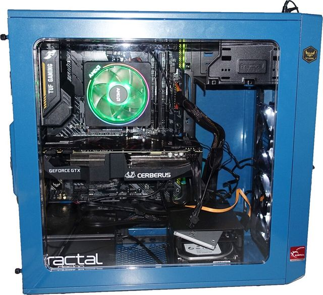
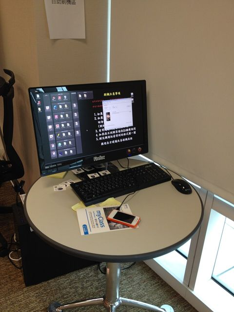
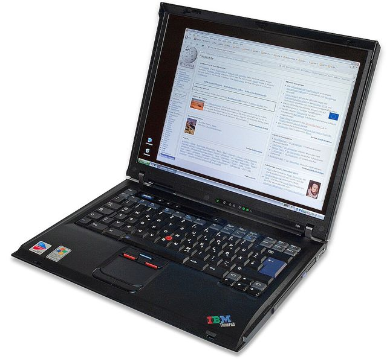
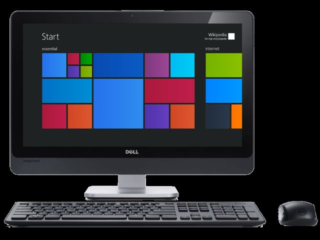
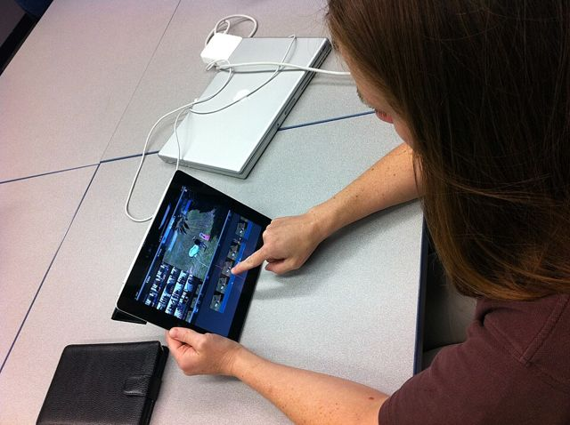
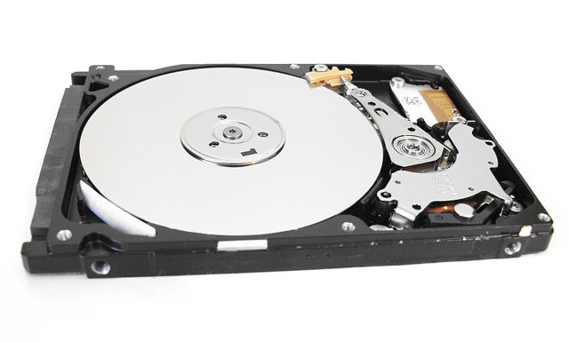
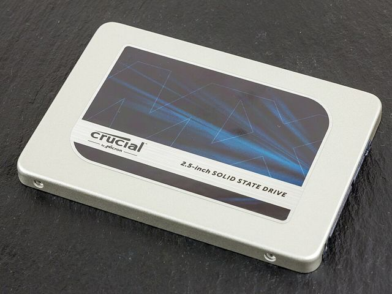
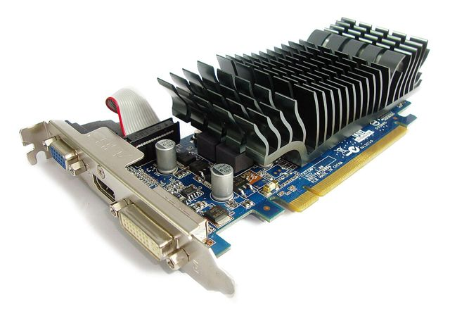

Herramientas Informáticas · Clase 1
La computadora:
partes y periféricos
Hoy vamos a abrirla, a probar sus piezas y a jugar con ella.
Ing. Fernando F. Huamani Felles

Para empezar · toquen cada tarjeta
¿Es una computadora o no?
Primero voten levantando la mano. Después toquen la tarjeta para ver la respuesta.
Definición
¿Qué es una computadora?
Es una máquina electrónica que recibe datos, los procesa siguiendo instrucciones y entrega información útil.
Dato
Un valor suelto, sin contexto: 14, 17, 12. Solo números.
Información
El dato ya procesado y con sentido: “Tu promedio es 14, aprobaste”.
Es un dato: no sabemos qué significa. “Tienes 38 °C de fiebre” ya es información.
Experimento · el ciclo de toda computadora
Entrada → Proceso → Salida
1 · ENTRADA
2 · PROCESO
3 · SALIDA
+ ALMACENAMIENTO
Dos mundos
Hardware y software
🔧 Hardware · hoy
Todo lo físico: lo que puedes tocar. Placa madre, procesador, teclado, monitor…
💿 Software · próxima clase
Los programas e instrucciones que le dicen al hardware qué hacer.
Reto: ¿hardware o software? Respondan en voz alta y toquen para comprobar.
Formas de computadora
Tipos de computadoras

De escritorio
Fija. Fácil de reparar y mejorar.

Laptop
Todo integrado y con batería.

Todo en uno
Las piezas van dentro del monitor.

Tablet / celular
De bolsillo, con pantalla táctil.

Servidor
Atiende a miles de usuarios a la vez.
¿Cuál le recomendarías a…?
Error muy común
Toca la foto que es la CPU
01
Parte 1
Dentro del gabinete
Las piezas internas que hacen que la computadora funcione.
Explora · toca cada componente
¿Qué hay dentro?
Experimento · el procesador
¿Para qué sirven los núcleos?
Un procesador puede tener varios núcleos: cada uno es como un trabajador. Tienes 8 tareas abiertas. Elige cuántos núcleos tiene tu procesador y ejecútalas.
El procesador ejecuta las instrucciones de los programas. Su velocidad se mide en GHz. Las marcas más conocidas son Intel y AMD.
Prueben primero con 1 núcleo y después con 8. ¿Qué cambia?
Experimento · memoria RAM y disco
El experimento del apagón
🧠 MEMORIA RAM · LO QUE ESTÁS USANDO AHORA
Paso 1: escribe algo. Paso 2: apaga. ¿Qué pasó? Paso 3: escribe otra cosa, guárdala y vuelve a apagar.
La RAM es volátil: solo guarda datos mientras hay electricidad. El disco guarda los archivos de forma permanente.
Experimento · almacenamiento
Carrera: HDD contra SSD

0.0 s
0.0 s| HDD · disco duro | SSD · estado sólido | |
|---|---|---|
| Cómo funciona | Un disco que gira y un brazo que lee | Chips de memoria, sin piezas móviles |
| Golpes | Delicado | Resistente |
| Precio | Más barato por GB | Más caro por GB |
Experimento · tarjeta gráfica
Tarjeta gráfica (GPU)
Dibuja todo lo que ves: ventanas, videos y juegos. Mientras más potente, más imágenes por segundo (FPS) puede dibujar.

Integrada: viene dentro del procesador. Dedicada: tarjeta aparte, para juegos y diseño.
¿Qué pasaría si…?
Quítale una pieza a la computadora
Antes de tocar, que la clase adivine qué va a pasar.
Elige una pieza para quitarla.
Resumen · adivinen antes de tocar
Si la computadora fuera una oficina…
| Componente | En la oficina sería… (toca) | Su función |
|---|---|---|
| Placa madre | El edificio y sus pasillos | Conecta y comunica todo |
| Procesador (CPU) | El trabajador | Ejecuta las instrucciones |
| Memoria RAM | El escritorio | Tiene a mano lo que se usa ahora |
| HDD / SSD | El archivador | Guarda todo de forma permanente |
| Tarjeta gráfica | El diseñador | Dibuja lo que se ve en pantalla |
| Fuente de poder | La instalación eléctrica | Da energía a todo |
| Cooler | El aire acondicionado | Evita que se sobrecaliente |
02
Parte 2
Los periféricos
Los dispositivos que conectamos para comunicarnos con la computadora.
Definición
¿Qué es un periférico?
Es todo dispositivo externo que se conecta a la computadora para meter información, sacarla, o ambas cosas.
⬅️ Entrada
La información viaja hacia la computadora.
➡️ Salida
La información viaja desde la computadora hacia ti.
↔️ Entrada y salida
La información viaja en los dos sentidos.
Tu voz entra a la computadora → es de entrada.
Laboratorio · periféricos de entrada · en esta diapositiva usa los botones de abajo para avanzar
Pruébalos en vivo
⌨️ Teclado
🖱️ Mouse
🎙️ Micrófono
📷 Cámara web
La imagen solo se ve aquí, no se guarda ni se envía.Periféricos de entrada · ¿para qué sirve cada uno?
Llevan información a la computadora
Laboratorio · periféricos de salida
Ahora la computadora te habla a ti
🖥️ Monitor
🔊 Parlantes
Sube el volumen del aula.🖨️ Impresora
Dato curioso: todo lo que estás viendo ahora llega por un periférico de salida: el monitor o el proyector.
Salida y entrada-salida · toca para descubrir
Muestran resultados… o hacen las dos cosas
Juego · clasifica los periféricos
¿Entrada, salida o ambas?
Todo junto · un caso real
Graba tu voz y mira el recorrido
ENTRADA
PROCESO
ALMACENAMIENTO
SALIDA
Reto final
Trabajo de la clase
Arma tu propio caso real
Elabora un documento (en Word o a mano) donde menciones:
4 periféricos de entrada
Con una línea sobre para qué sirve cada uno.
4 componentes internos
Qué hace cada uno dentro del gabinete.
4 periféricos de salida
Con una línea sobre para qué sirve cada uno.
Luego elige un caso real (como el de la grabación de voz) y explica cómo se relacionan una entrada, los componentes internos y una salida.
Para recordar
Lo más importante de hoy
- Una computadora recibe datos, los procesa y entrega información.
- Siempre sigue el ciclo entrada → proceso → salida, y el almacenamiento guarda los resultados.
- Por dentro: placa madre, procesador, RAM, almacenamiento, tarjeta gráfica, fuente y cooler.
- La RAM es temporal; el disco HDD/SSD es permanente.
- Los periféricos son de entrada, salida o ambos, según hacia dónde viaja la información.
Herramientas Informáticas
¡Gracias!
Próxima clase: el software, las instrucciones que le dan vida al hardware.
Créditos de las imágenes
Fotografías de Wikimedia Commons, usadas según sus licencias libres. Toca un nombre para ver la fuente.